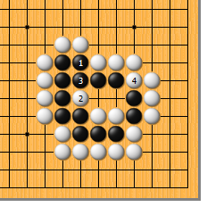
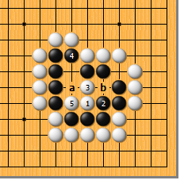
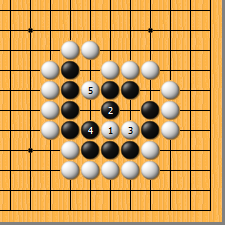
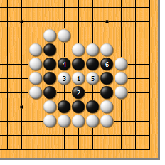
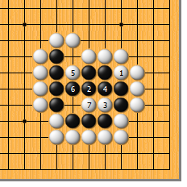
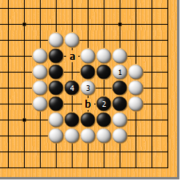

|  | ||
| 图1 中腹的棋总是很难。白1靠，正是此形的急所。黑2如粘，白3断，黑4只好顶住，被白5挖，气紧而亡。 | 图2 前图的黑4如走本图的1位扩大眼位如何？如此，白2打，黑3粘时白4再打，黑接不归。
| |
|
 |
 | |
图3 白1靠时，黑2如粘这边，又如何呢？这时候，白3长，好。黑4如扩大眼位，白5拐，黑仍因气紧而做不出眼。以后，黑b则白a。白5于a位拐也可。
| 图4 再试试黑2的顶。如此，白3打，黑4必粘，白5挖，还原到图1。
| |
|
 |
 | |
图5 还有一个急所，就是如图的1位靠。然而，黑2顶，白3长，黑4粘，白5再长时，黑6再粘，结果是双活。如此，白失败。 | 图6 白1从外面紧气，看似冷静，实则似是而非。然而，黑2如随手一应，被白施展3打、5挖、7打的组合拳，非一命呜呼不可。
| |
|  | 您的高见 | |
图7 正确的应法是黑2的粘。先把自己的毛病补强，总是不错的。白3如点，黑4顶上。以后，a、b成见合，黑死里逃生。 |